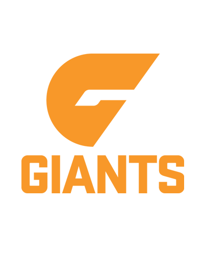

Penrith Panthers, NRLSydneyOct 2025 – Present
Penrith Panthers, NRLSydneyOct 2025 – PresentNRL Sports Scientist (internal data and reporting)
- Designed and built the club's athlete management system end to end: a hosted multi-user web application (R Shiny and Python / Streamlit, PostgreSQL on Supabase, Railway, Docker) that ingests GPS, force-plate and wellness data through the Smartabase API into one always-current store and serves live dashboards and automated reporting.
- Built the underlying data pipelines in R, Python and SQL that make the integrated dataset queryable, with plain-language querying over the top.
- Automated the weekly reporting suite used daily by performance, medical and coaching staff, replacing manual spreadsheet work with reproducible, version-controlled outputs.
 Subject:RAW and independent buildsSydney2024 – Present
Subject:RAW and independent buildsSydney2024 – PresentFounder and Data / Product Builder
- Built production data applications end to end: a live-operations dashboard with automated alerting for an e-commerce brand (FastAPI, Supabase, Railway), plus demand-forecasting and reporting tools.
- Design the data models, pipelines and dashboards and ship them to production, applying AI tooling to automate reporting workflows.

GWS Giants, AFLSydneySep 2024 – Oct 2025VFL Performance Coach and AFL Sports Science Intern
- Built monitoring dashboards in Excel, Power BI and Tableau, and ran the testing and profiling analytics behind session planning and return-to-play decisions.
 Sydney Kings, NBLSydneyAug 2022 – Aug 2024
Sydney Kings, NBLSydneyAug 2022 – Aug 2024Sports Scientist and Strength & Conditioning Coach
- Built automated athlete-monitoring systems from wellness, VALD and force-plate data, and produced the dashboards and reports coaches, agents and scouts relied on for player evaluation.
- Contributed to player development and evaluation at the professional level, including three athletes who went on to sign NBA contracts.
 AUSA Hoops
AUSA Hoops